AWS Rails settings
Table of Contents
-
<<<<<<< Updated upstream
- 1. AWS EC2 Server Settings
- 1.1. EC2 생성
- 1.2. SSH 접속 settings
- 1.3. root password설정과 root로 ssh 연결
- 1.4. deploy를 위한 계정 설정
- 1.5. ruby 설정 (deploy계정으로)
- 1.6. bundler설정
- 1.7. Nginx & Passenger 설정
- 1.8. Mariadb Database 설치하기
- 1.9. Capistrano설정
- 1.10. Capistrano Error
- 1.11. bundler:install, Failed to build gem native extension
- 1.12. deploy:migrating error
- 1.13. db관련 에러가 계속해서 나올경우
- 1.14. cap production deploy 하자마자 sshkit error
- 1.15. git permission error
- 1.16. phusion messager is not running
- 1.17. nginx 설정과 log위치 [ubuntu]
- 1.18. passenger log file
- 2. rails 개발 참조 사이트
1 AWS EC2 Server Settings
1.1 EC2 생성
=======- 1.1. EC2 생성
- 1.2. SSH 접속 settings
- 1.3. root password설정과 root로 ssh 연결
- 1.4. deploy를 위한 계정 설정
- 1.5. ruby 설정 (deploy계정으로)
- 1.6. bundler설정
- 1.7. Nginx & Passenger 설정
- 1.8. Mariadb Database 설치하기
- 1.9. Capistrano설정
- 1.10. Capistrano Error
- 1.11. bundler:install, Failed to build gem native extension
- 1.12. deploy:migrating error
- 1.13. db관련 에러가 계속해서 나올경우
- 1.14. cap production deploy 하자마자 sshkit error
- 1.15. git permission error
- 1.16. phusion messager is not running
- 1.17. nginx 설정과 log위치 [ubuntu]
- 1.18. passenger log file
1 AWS EC2와 Web Server Settings(ROR)
1.1 EC2 생성
>>>>>>> Stashed changes- login한 후에 aws ec2를 만들자.
- Launch instance 실행
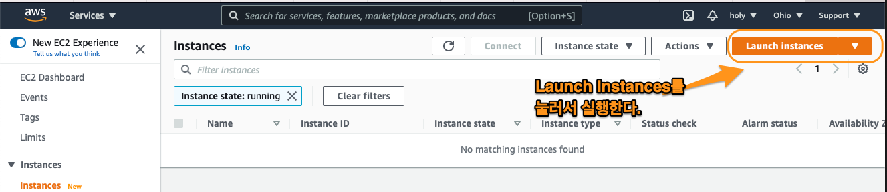
Figure 1: launch instance
- ubuntu 20.04를 선택
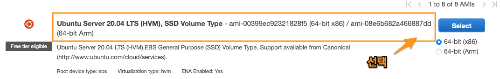
Figure 2: ubuntu 20.04 image 선택
3)instance를 설정한다.
<<<<<<< Updated upstream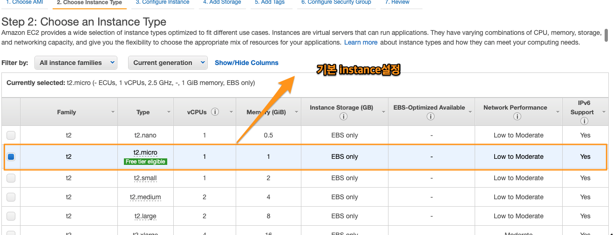
Figure 3: instance 설정
- storage(EBS)설정 (돈이 들어간다.)
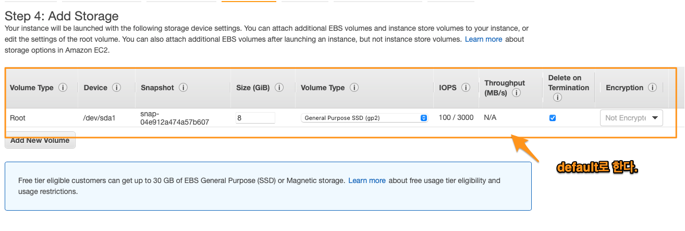
Figure 4: ebs 설정한다.
- 보안관리자(Security Group)
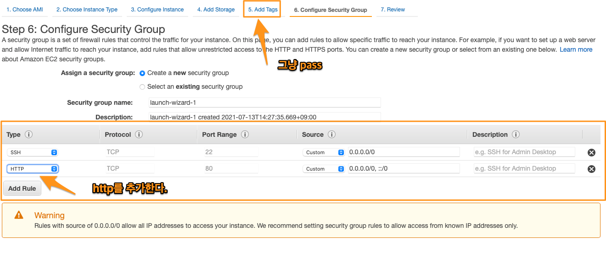
Figure 5: http추가
- key 생성
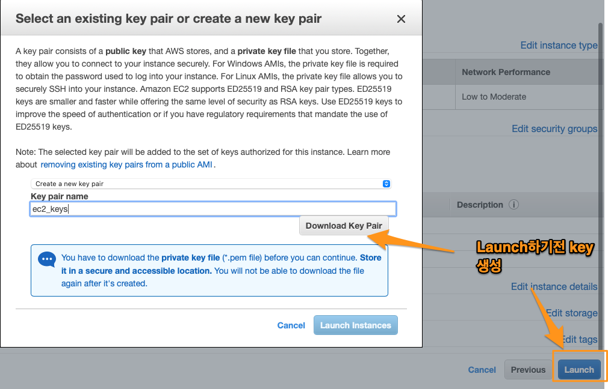
Figure 6: key
1.2 SSH 접속 settings
=======1.2 SSH 접속 settings
>>>>>>> Stashed changes- 받은 pem 키를 chmod 0400으로 설정한 후 ~/.ssh/ 에 넣는다.
ec2의 주소를 check한 후 ssh로 접속해보자.
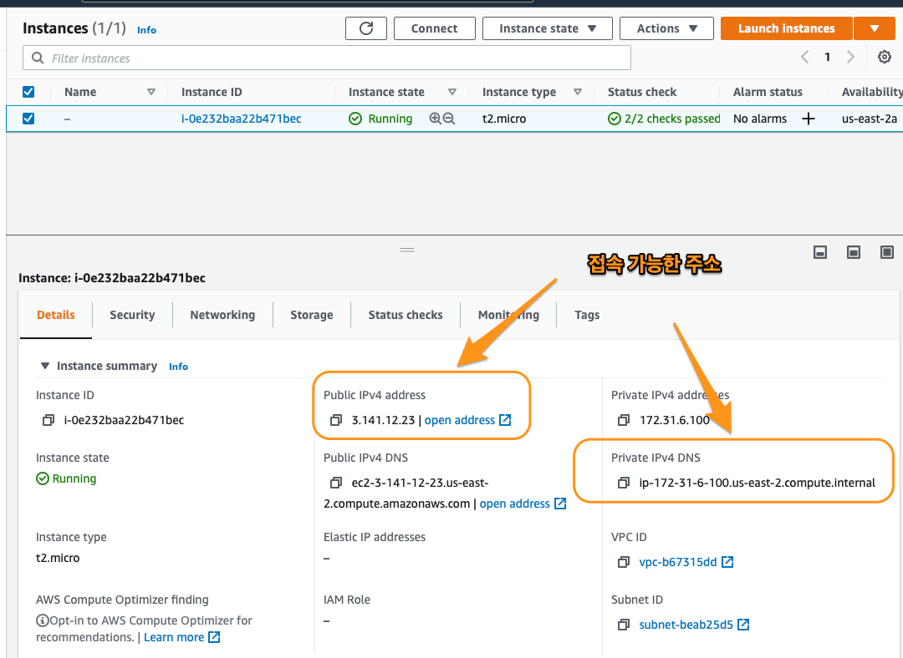
ssh -i ~/.ssh/ec2keys.pem ubuntu@주소
aws에서 설정할 때 얻은 ssh pem 키와 주소를 사용해서 ssh접속을 한다. 주소는 dns주소 혹은 ip주소를 사용해도 된다. 아래에 보면 ubuntu계정으로 접속한 것을 볼 수 있다.
<<<<<<< Updated upstream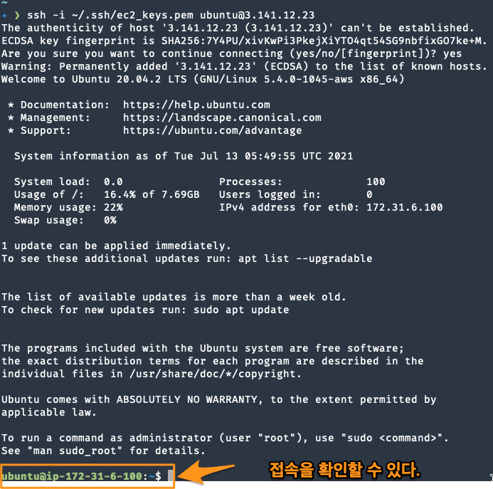
Figure 8: connection
1.3 root password설정과 root로 ssh 연결
1.3 root password설정과 root로 ssh 연결
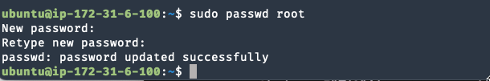
Figure 9: root password설정
- ssh 접속을 root로 할 수 있게 설정
- ubuntu로 접속한다.
sudo vi /etc/ssh/sshdconfig에서
'#PermitRootLogin prohibit-password를 PermitRootLogin prohibit-password yes로 바꾼다.
- su root를 사용해서 root로 switch한다.
- cd로 home/.ssh으로 이동
- mv authorizedkey authorizedkeybak
- cp home/ubuntu.ssh/authorizedkeys . 현재 ubuntu계정의 ssh키만 aws ec2에 접속할 수 있는 이유는 authorizedkey때문이다. 이 key를 root에 복사해서 root로 접근할 수 있게 하는 것이다.
- service sshd restart
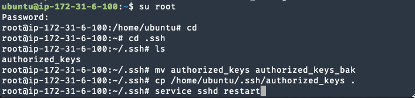
Figure 10: ssh 처리
- root로 접근이 되는 지 확인해 본다.
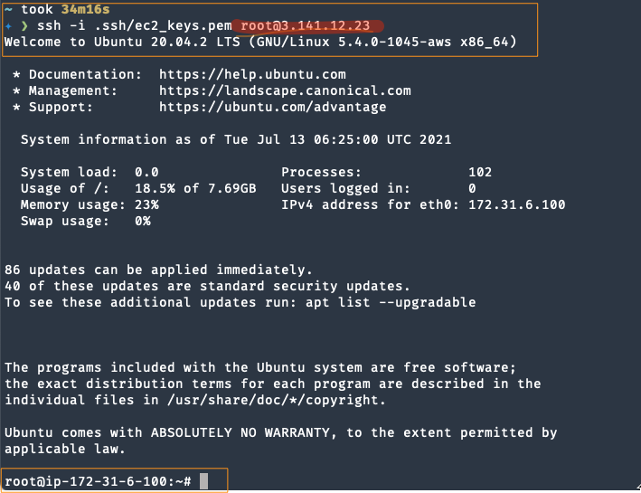
Figure 11: root ssh
1.4 deploy를 위한 계정 설정
=======1.4 deploy를 위한 계정 설정
>>>>>>> Stashed changes- ssh root로 접근
- deploy계정 생성
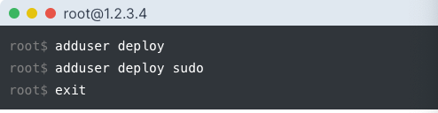 나머지 설정도 해준다.
- deploy계정에도 ubuntu, root처럼 ssh 접근이 가능하게 설정한다.
- sudo mkdir home/deploy.ssh
- sudo cp home/ubuntu.ssh/authorizedkeys home/deploy.ssh
- sudo chown -R deploy:deploy home/deploy.ssh
- sudo service sshd restart
- sudo usermod -aG sudo deploy
- test를 해본다.
1.5 ruby 설정 (deploy계정으로)
1.5 ruby 설정 (deploy계정으로)
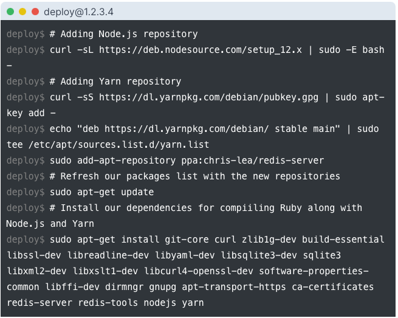
Figure 12: deploy2
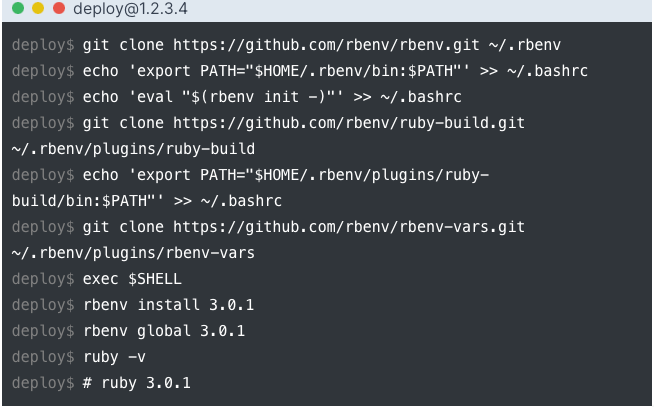
Figure 13: deploy3
1.6 bundler설정
1.6 bundler설정
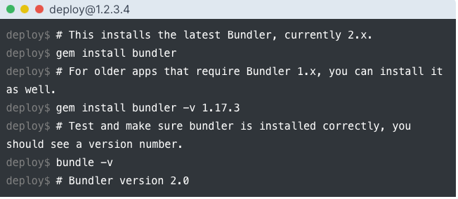
Figure 14: bundler
1.7 Nginx & Passenger 설정
1.7 Nginx & Passenger 설정
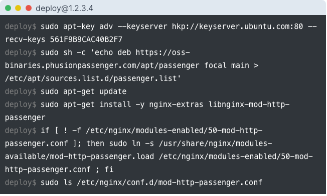
Figure 15: nginx&passenger
passenger config 파일 수정
sudo vi /etc/nginx/conf.d/mod-http-passenger.conf
아래와 같이 수정한다.
Figure 16: passenger config
nginx를 다시 시작한다.
sudo service nginx start
- nginx 접속 해 본다.
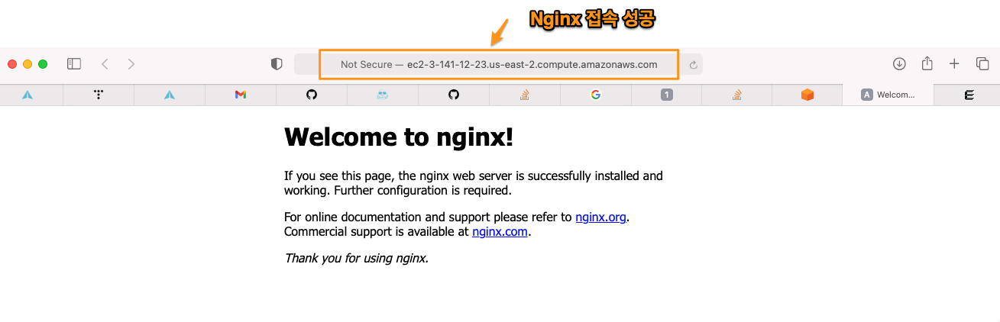
Figure 17: nginx
- nginx에 우리의 app을 연결한다.
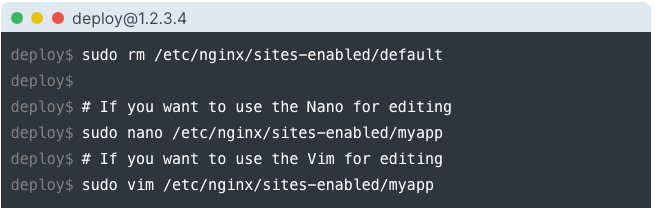
Figure 18: nginx associates with my app
기존에 연결된 default를 제거하고, 대신 myapp을 설정한다. 그리고 다시 nginx를 다음과 같이 reload한다.
sudo service nginx reload
Problem: 예상치 못한 에러 발생
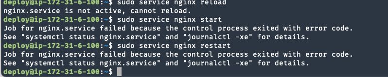 journalctl -xe를 실행해서 에러의 원인이 뭔지 알고 싶었다. 다음과 같은 메시지가 있었다.
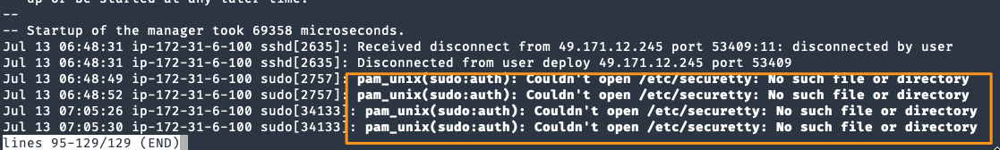 더 정확한 확인을 위해서 nginx의 log를 확인해 보자
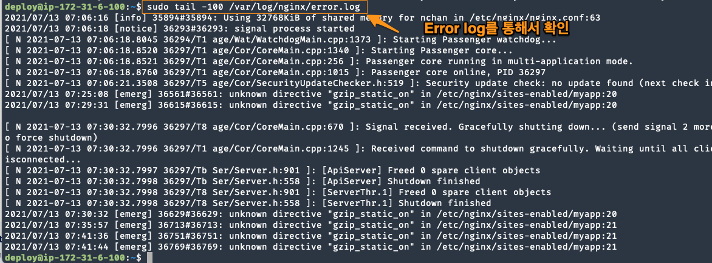 위에 보면 gzipstaticon에 문제가 있어 보인다.
- solution: gzipstatic on으로 고쳤다.
1.8 Mariadb Database 설치하기
=======1.8 Mariadb Database 설치하기
>>>>>>> Stashed changes우선 system을 업그레이드한다.
sudo apt update && sudo apt-get -y upgrade
- sudo apt-get install -y mariadb-server mariadb server를 설치한다.
- sudo apt-get install -y mariadb-client mariadb client를 설치한다.
- sudo apt-get install -y libmariadbclient-dev
- sudo mysqlsecureinstallation
root pw를 설정한다.
- password를 묻는다. 이것은 system password, sudo에 대한..그래서 1234를 입력
- validation production : y
- root pw 입력:root1234, 참고로 deploy계정은 pw:user1234
- anonmous user 삭제:y
- remote :n
- testdb delete :y
- privileges table reload: y
- sudo mysql -u root -p mariadb 설치후에 바로 접속을 시도 해도 접속이 된다.
Figure 19: mysql connection
- mariadb에서 database와 user를 만든다.
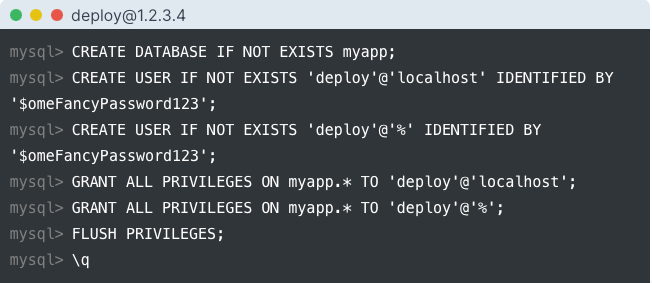
Figure 20: db & user
rails app도 myapp으로 했지만, db에서 database도 myapp으로 통일한다. aws에서 만든 계정인 deploy를 db에서도 접근할 수 있게 db에도 만든다.
1.9 Capistrano설정
capistrano의 일반적 처리과정.
1.9 Capistrano설정
capistrano의 일반적 처리과정.
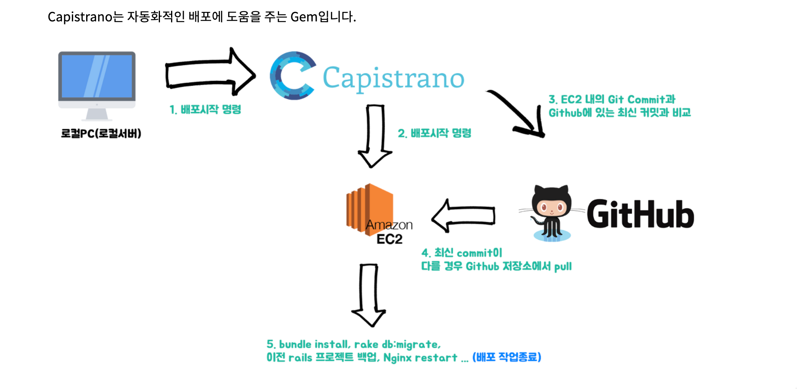
Figure 21: capistrano
- aws(배포서버)에 접속할 pem이 있는지 확인. pem이 있다면 접속한다.
- git을 접속할수 있는지 확인(ssh permission), ssh key가 있다면 접속
- git source를 배포 서버에 복사 (이 과정이 git:check, git:install….)
- Gem을 bundler를 이용해서 설치(이 과정이 bundler:check, bundler:install…)
- nginx를 restart
Gemfile 설정
Gemfile 설정
Local로 다시 들어간다. myapp으로 간다. Gemfiles에 다음을 추가한다. 추가할 때 group :development에 할당하자. 이 과정은 capistrano package를 설치하겠다는 것이다.
gem 'capistrano', '~> 3.11' gem 'capistrano-rails', '~> 1.4' gem 'capistrano-passenger', '~> 0.2.0' gem 'capistrano-rbenv', '~> 2.1', '>= 2.1.4'
이렇게 작성 하고 다음을 실행한다.
bundle cap install STAGES=production
bundle을 실행하면, gemfile에 기술된 gem들이 install된다. capistrano도 installed되어서 cap이란 명령어를 실행할 수 있다. cap install을 실행하면, deploy를 위한 설정 파일(.rb)들을 만들어 낸다. 만일 cap명령어를 실행하나 수행되지 않을 때는 rbenv rehash를 하고 다시 실행한다.
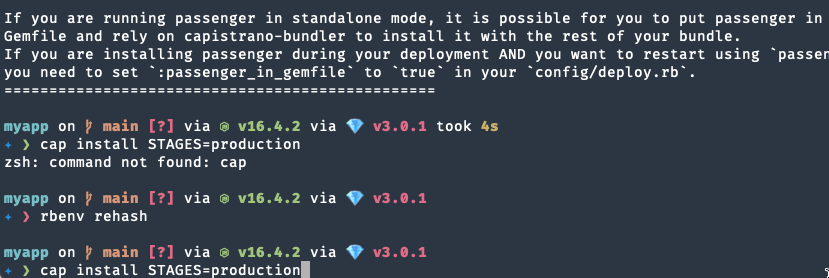 cap으로 만들어지는 파일은 capfile, deploy.rb, staging.rb,production.rb같은 deploy같은 설정파일들이다.
Capfile 설정
Capfile 설정
capfile은 배포설정 파일을 load할 뿐이다. 실제 설정은 load되는 파일에서 한다.
require 'capistrano/rails' require 'capistrano/passenger' require 'capistrano/rbenv'
set :rbenvtype, :user set :rbenvruby, '3.0.1'
config/deploy.rb 설정
config/deploy.rb 설정
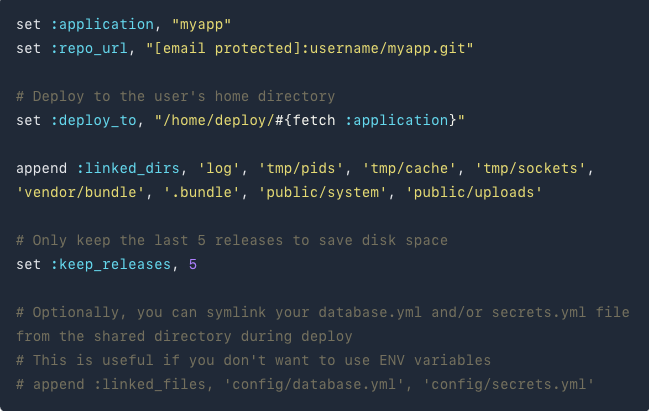
Figure 22: deploy settings
1.10 Capistrano Error
Thread error
1.10 Capistrano Error
Thread error
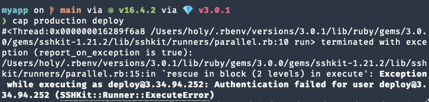 => cap은 aws에 접근할 수 있는 pem키가 없다면, cap이 진행되지 않고 바로 exception이 난다. ssh-add 를 사용해서 key를 등록한다. ssh-add ~/.ssh/company-ec2-keys.pem을 수행한다.
git:check error-permission denied error
git:check error-permission denied error
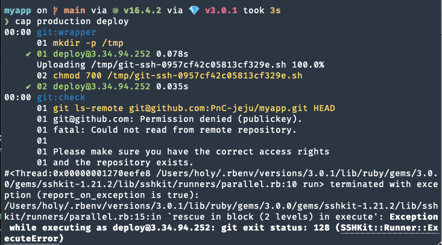 => ssh-add ~/.ssh/id-rsa 를 해보면 될 수 있다.
git:createrelease master error
git:createrelease master error
=> set branch main in deploy.rb
bundle:install
bundle:install
=> [arm64-darwin-20] but your local platform is x8664-linux
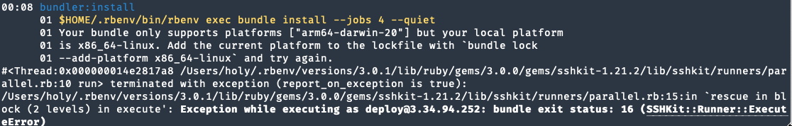 이것의 원인은 capistrano처리중에 github에서 rails app source를 가지고 와서 배포서버의 release폴더에 넣은 후에 bundler를 실행할 때 발생되는 에러같다. bundler가 Gemfile.lock을 실행하는 데 Platform이 local에서는 arm64-darwin-20은 정해져 있으나, x86-64-linux가 기술되어 있지 않다는 것이다. local에서는 bundle lock –add-platform x8664-linux를 실행해서 변경할 수 있다고 하는데, Gemfile.lock에서 x8664-linux가 추가된 것을 확인할 수 있다. 그런데 실제 배포server의 release폴더에 있는 Gemfile.lock에는 반영되지 않은 것을 볼 수 있다. 이것의 원인을 찾고자, 배포 서버에 접속해서 log를 살펴보았다.
less /home/deploy/myapp/current/log/production.log
별다른 내용은 없었다. 그래서 release폴더에서 bundle을 실행했고, bundle lock –add-platform x8664-linux를 실행했다. 그랬더니 다음과 같은 에러가 발생했다.
<<<<<<< Updated upstream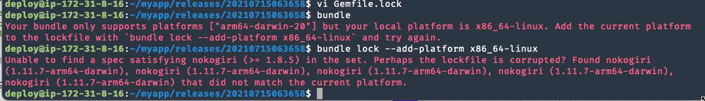
Figure 23: deploy 배포서버
이 에러는 nokogiri를 설치할때 발생되는 에러같다. gorails에서 처음에 nokogiri를 설정할 때 처리해야 할 것들이 적힌곳이 있다. 그것과 관련이 있는지는 모르겠다. Gemfile과 Gemfile.lock은 구조가 많이 다르다. Gemfile에는 몇개의 package만 적혀 있고, Gemfile.lock에는 Gemfile에서 명시했던 package를 구성하는 세부 package들이 버전별로 나열되어 있는거 같다. nokogiri란 package는 Gemfile에는 기술 되어 있지 않으나, Gemfile.lock에는 기술되어 있는거 같다.
=> 해결책 우선 cap production deploy할 때, 배포 서버에서 실행하는것은 무조건 github의 내용이다. 만일 local에서 무언가를 고치거나, 수정했다면, github에 commit한 후에 cap production deploy를 해야할 듯하다.
1.11 bundler:install, Failed to build gem native extension
=======1.11 bundler:install, Failed to build gem native extension
>>>>>>> Stashed changes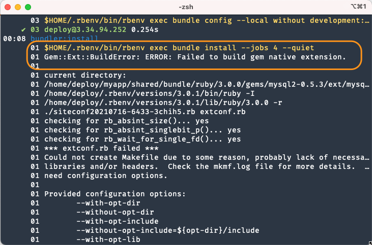 이 문제에 대한 처리 과정은 다음과 같다.
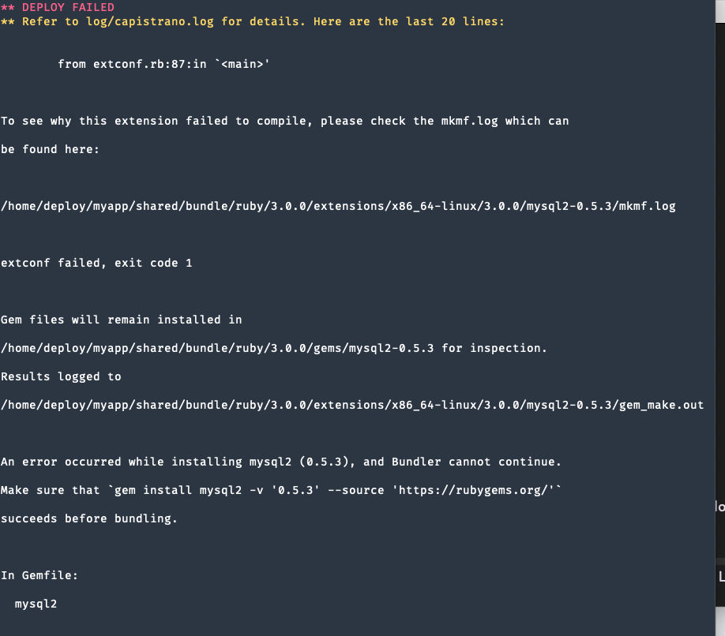\
우선 위에 적힌대로 해보자. 그런데, 근본적인 문제는 mysql2 설치 문제다. 배포 서버에 들어가서 mysql2를 설치해 보자. 동일한 에러가 발생한다.
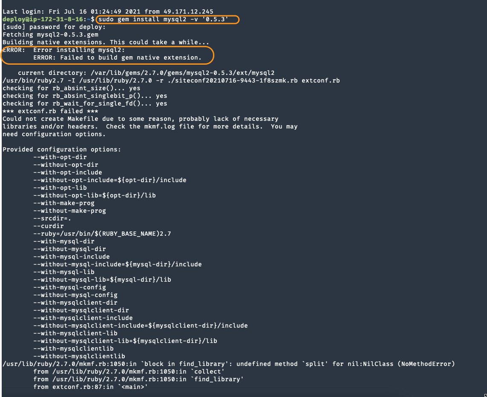 => 해결 : sudo apt-get install libmysqlclient-dev를 설치하니 무사히 설치되었다.
1.12 deploy:migrating error
=======1.12 deploy:migrating error
>>>>>>> Stashed changes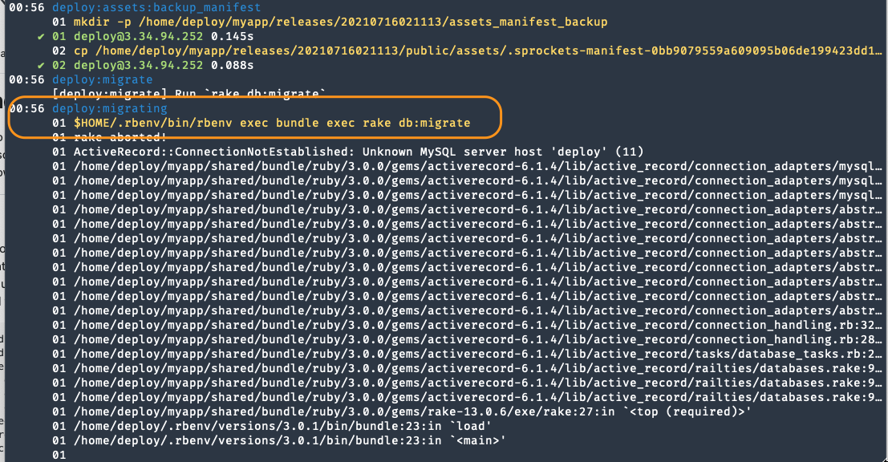 우선 mysql관련 설정환경을 배포 서버의 .rbenv-vars파일에 기술했었는데, 그게 문제일 수도 있다는 생각이 들었다. capistrano가 db에 접속을 해야 하는데, 접속은 URL로 하고, URL정보는 .rbenv-vars파일에 기술했기 때문이다. 그래서 다음과 같이 .rbenv-vars파일을 변경해 보았다.
vi home/deploy/myapp.rbenv-vars DATABASEURL=mysql2://deploy@localhost:/myapp
다른 에러가 발생했다.
<<<<<<< Updated upstream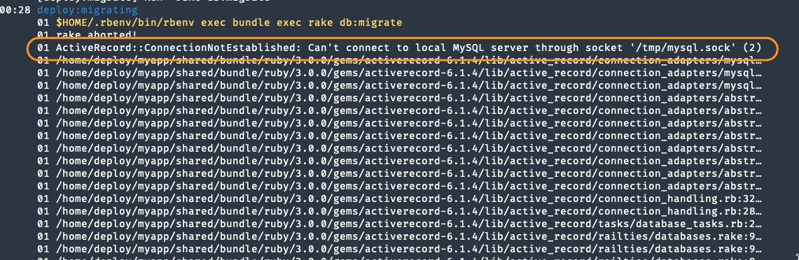
Figure 24: mysqlsocketerror
배포 서버에서 mysql이 제대로 설치 되지 않은거 같다. 그래서 gorails에서 나온대로 다시 mysql-server, myssql-client, libmysqlclient-dev를 설치해본다. mysql-server 설치에 문제가 있음을 알 수 있었다. 여튼 설치를 끝내고, sudo mysqlsecureinstallation를 실행하면 다음과 같은 에러가 있음을 알 수 있다.
<<<<<<< Updated upstream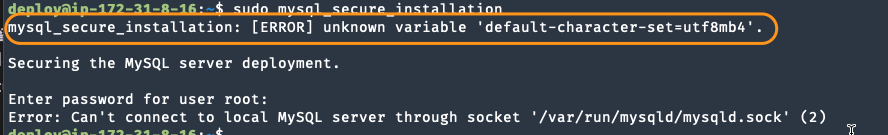
Figure 25: secureconnection
1.13 db관련 에러가 계속해서 나올경우
=======1.13 db관련 에러가 계속해서 나올경우
>>>>>>> Stashed changesmysql과 mariadb를 모두 삭제한다.
apt-get remove –purge mysql* apt-get remove –purge mysql apt-get remove –purge mariadb apt-get remove –purge mariadb* apt-get –purge remove mariadb-server apt-get –purge remove python-software-properties
한번에 삭제가 안되면 한 두번 실행한다.
그리고 다시 mariadb를 설치해본다. 설치과정은 다음과 같다.
sudo apt-get install -y mariadb-server mariadb server를 설치한다. sudo apt-get install -y mariadb-client mariadb client를 설치한다. sudo apt-get install -y libmariadbclient-dev
그리고 cap production deploy를 하면 또 다시 다른 에러가 나온다.
<<<<<<< Updated upstream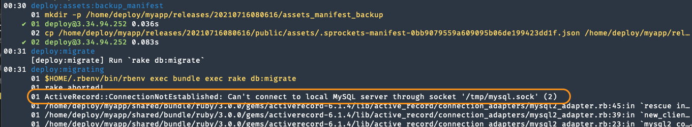
Figure 26: socket error
이것은 /tmp/mysql.sock을 찾을 수 없다는 건데, database.yml에 보면 socket정보가 tmp/mysql.sock에 있기 때문이다. 실제 배포 서버는 socket이 저장되는 위치는 var/run/mysqld/mysql.sock이다. 그래서 이것을 바꿔줘야 하는데, database.yml에서 바꿔준 다음 반드시 github에 반영해야 한다. 왜냐면 capistrano는 github의 내용을 바탕으로 실행하기 때문이다.
그러면 socket 문제는 해결된다. 하지만, Access denied 문제가 발생된다.
<<<<<<< Updated upstream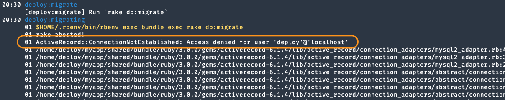
Figure 27: socket
db에 deploy계정이 있는지 확인해 본다. 또한 myapp이란 db가 있는지도 확인해 본다. myapp이란 db에 deploy가 접근할수 있도록 권한을 부여해야 하기 때문이다. 없으면 만든다.
sudo mysql -uroot -p show databases; //check if myapp db exists use mysql select User, Plugin, Host from user; //check if deploy account exists drop user 'deploy'@'localhost'; or drop user 'deploy'@''; CREATE DATABASE IF NOT EXISTS myapp; CREATE USER IF NOT EXISTS 'deploy'@'localhost' IDENTIFIED BY '$omeFancyPassword123'; CREATE USER IF NOT EXISTS 'deploy'@'%' IDENTIFIED BY '$omeFancyPassword123'; GRANT ALL PRIVILEGES ON myapp.* TO 'deploy'@'localhost'; GRANT ALL PRIVILEGES ON myapp.* TO 'deploy'@'%'; FLUSH PRIVILEGES;
1.14 cap production deploy 하자마자 sshkit error
=======1.14 cap production deploy 하자마자 sshkit error
>>>>>>> Stashed changes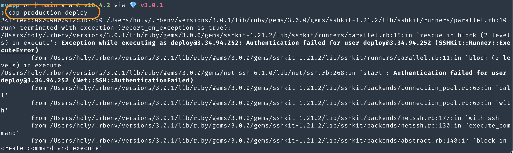 이것은 aws pem키가 등록되지 않았다는 에러다. ssh-add ~/.ssh/company-ec2-keys.pem로 등록을 해야 한다.
1.15 git permission error
=======1.15 git permission error
>>>>>>> Stashed changes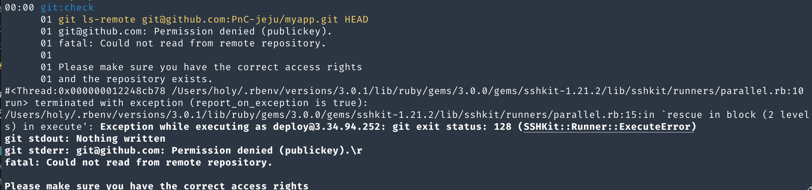 이것은 git ssh public key가 등록되지 않았다는 에러다. ssh-add ~/.ssh/idrsa로 등록을 해준다.
1.16 phusion messager is not running
1.16 phusion messager is not running
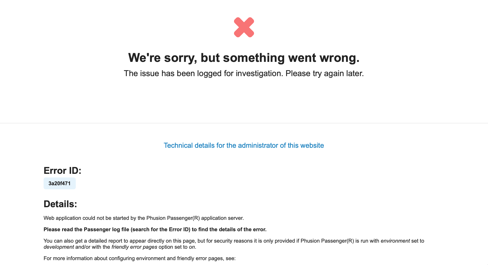
Figure 28: passenger error
cap production deploy했을때 별다른 이상없이 통과되어 해당 web server로 접속하면, 위와 같은 에러가 발생되는데, 다시 cap production deploy 진행과정을 보니 다음과 같은 문제가 있었다.
<<<<<<< Updated upstream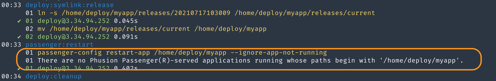
Figure 29: passenger error
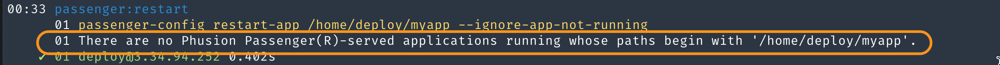
Figure 30: passenger error3
그래서 /va/log/nginx/error.log로 가서 어떤 에러인지 확인해봤다.
<<<<<<< Updated upstream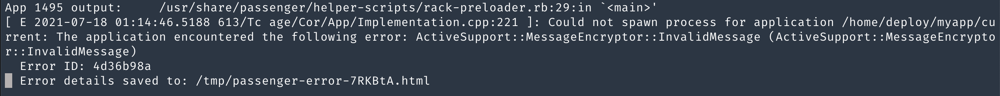
Figure 31: passenger error
근데 찝찝했던건, gorails에서 세팅을 제대로 하지 않았다는 것이다.
<<<<<<< Updated upstream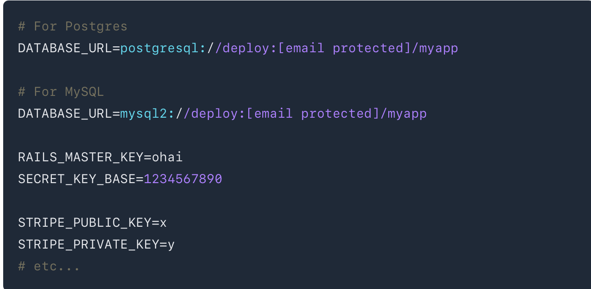
Figure 32: gorails settings
=> 해결 배포서버로 접속해서 myapp/.rbenv-vars파일을 만들고 그냥 복사 붙여넣기 했다. 그게 좀 찝찝해서 databaseurl도 변경하고, 어디서 보고 변경했는지는 잘 기억이 안나지만, 그것도 변경하고, RAILSMASTERKEY도 ohai가 아닌, myapp/config/master.key파일을 읽고 그 hash값을 붙여넣으니 문제가 해결되었다. 정확한 내용은 모르지만, 접속관련한 중요한 사항들을 secret.yml에 넣었다고 한다. 이 secret.yml이 버전이 올라가면서 변경된 것이다. 왜냐하면 rails에서 app을 만들자마자 git을 만들고, 배포를 위해서 github에 저장하는데, 접속정보는 중요한 파일이라서 github에 그대로 노출될 수 있기 때문이다. 그래서 예전에는 개발자가 gitignore로 github에 올라가지 않게 했는데, 보안 문제로 이번에 완전 바꾼거다. .authinfo.gpg를 만들고 저장하면, 저장한게 자동으로 암호화 되어, gpg key가 있어야 편집이 가능하듯이, 접속정보를 가지고 있는 credentials.yml.enc는 암호화되어 있고, master key가 있어야 접근할 수 있는 구조다. 그래서 배포를 하는 capistrano는 master key정보가 있어야 한다. 이것을 배포 서버의 myapp/.rbenv-vars파일의 mastserkey변수에 넣어주면, capistrano는 credentials.yml.enc에 접근할수 있는 것이다. 그러면 위에 적힌 SECRETBASE는 어떻게 설정하는가?
우선 credentials.yml.enc를 편집하는 방법을 보자. local에서 myapp/config로 들어간 이후,
EDITOR=vim rails credentials:edit
이렇게 하면 credentials를 읽을 수 있다.
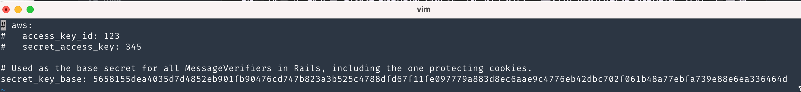 그리고 secretkeybase를 볼 수 있다. 이것을 복사해서 운영서버로 가서 myapp/.rbenv-vars에 붙여넣기 한다.
이렇게 하고 cap production deploy를 실행해보자.
<<<<<<< Updated upstream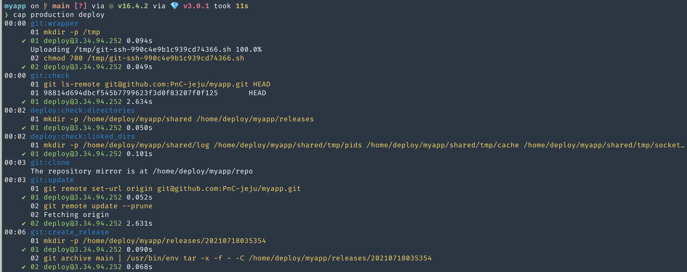
Figure 33: result1
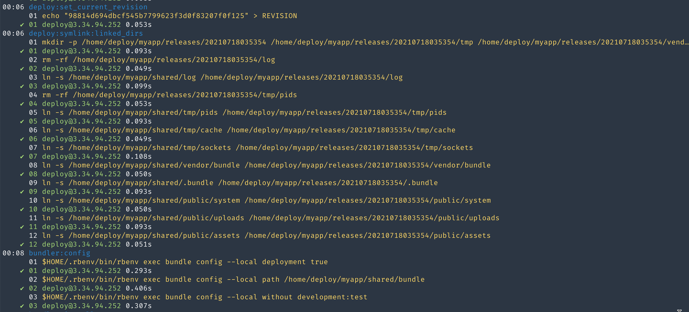
Figure 34: result2
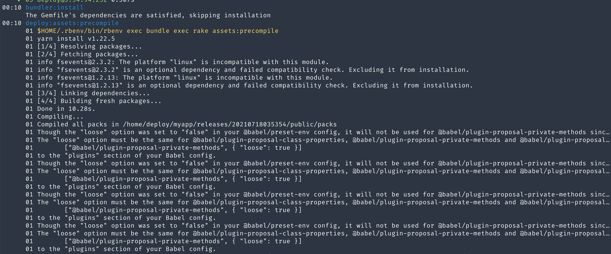
Figure 35: result3
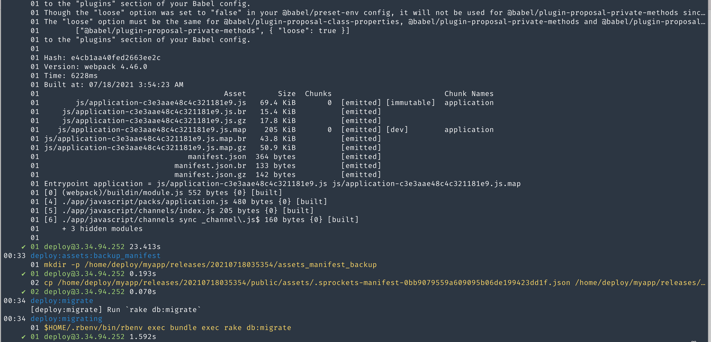
Figure 36: result4
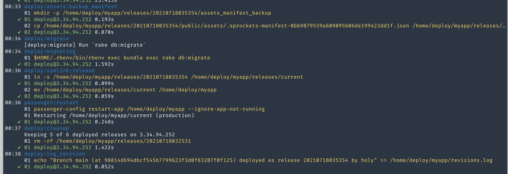
Figure 37: result5
Figure 34: result2
Figure 35: result3
Figure 36: result4
Figure 37: result5
이제 http://3.34.94.252 에 접속해 보자. 다음과 같은 에러가 나온다.
<<<<<<< Updated upstream
Figure 38: error
에러의 원인을 찾아보기 위해서 운영서버의 /myapp/log/production.log를 보면 다음과 같은 에러가 있다.
<<<<<<< Updated upstream
Figure 39: routing error
routing error다. 이것은 routes.rb에 처리하는 루틴이 없기 때문이다. 그런데 local에서는 routes.rb에 처리 루틴이 없는데도 welcome page가 보인다. 무슨 차이가 있는지 모르겠지만, capistrano를 통해서 운영서버에 배포하고 연결을 시도 했을 때는 welcome page가 보이지 않는다. 그래서 간단히 hello world를 출력하는 코드를 만들어봤다.
routes.rb
routes.rb
get "/articles", to: "articles#index"
rails g controller
rails g controller
rails g controller Articles index –skip-routes
index.html.erb
index.html.erb
<h1> hello hoyoul</h1>
위와 같이 하고 github에 저장한후 cap production deploy를 사용해서 운영서버에 배포한후 url로 접근하면 해당 페이지를 볼 수 있다.
<<<<<<< Updated upstream
Figure 40: hello
1.17 nginx 설정과 log위치 [ubuntu]
=======1.17 nginx 설정과 log위치 [ubuntu]
>>>>>>> Stashed changes/etc/nginx/nginx.conf [설정] /var/log/nginx/error.log [log] tails -f /var/log/nginx/error.log
nginx는 일반적인 설정을 한뒤 가상 호스트를 위한 설정 파일을 실행한다.
/etc/nginx/sites-enabled/myapp
을 실행한다.
1.18 passenger log file
=======1.18 passenger log file
>>>>>>> Stashed changespassenger가 nginx에 통합되어 설치되어 있어서 동일한 log를 사용한다고 보면 된다.
2 rails 개발 참조 사이트
2 AWS 계정 설정(root and IAM)
2.1 root계정 처리
AWS을 사용하면 root계정으로 login하면 안된다. IAM 사용자 계정을 사용해야 한다. root계정은 보안문제로 MFA(Multi Factor Authentication)을 꼭 설정해야 한다.
Figure 41: ROOT
Figure 42: ROOT2
Figure 43: root3
Figure 44: root4
설치할 MFA기기는 가상기기이고, 내 경우, google authenticator를 설치했다. 중간에 보면 show QR code 가 있다. 이것을 누르면 QR code가 보인다. 그리고 code1과 code2를 기입한다.
이제 root에 대한 MFA처리가 끝났다.
앞으로 root login은 mfa로 묻는다. 이제 IAM계정을 만든다.
2.2 IAM 계정 처리(group and user)
보통은 group을 만들고 group에 permission을 준 다음에 user를 넣어주지만, 작은 조직의 경우, user만을 생성해서 관리해도 된다.
Figure 45: user 생성
Figure 46: user 생성
위와같이 user id를 만들고, pw를 설정한다. pw를 임시로 설정하고, 실제 login시 사용자가 설정하도록 한다.
정책을 선택한다.
Figure 47: user 생성
tag 생성은 넘어간다.
Figure 48: user 생성
Figure 49: user 생성
이제 user가 만들어졌고, login할 수 있는 account ID 가 만들어져서 접속할 수 있게 되었다. 위에 account id를 로긴할 때 입력하면 된다. 참고로 account ID는 모든 IAM 계정들은 동일한 값을 갖는다.
Figure 50: user 생성
3 AWS 고정 IP 설정
Figure 51: elastic IP
AWS에서 ec2를 만들면, public ip이지만, 이것은 고정된 ip가 아니다. DHCP처럼 ec2는 재시작할 때 마다, ip를 갱신하는 과정을 거친다. 이를 고정 IP로 하기 위해선, elastic ip를 사용한다. 설정방법은 그냥 default로 진행하는건데, 이렇게 할때, option은 어떻게 설정해야 하는가? 하는 문젠데 설명이 나와 있진 않다.
Figure 52: eip2
위와 같이 해주면 elastic ip가 만들어졌다. 만들어진 elastic ip를 ec2와 연결하는 과정이 필요하다. 다시 ec2 dashboard로 접속한다. 거기서 elastic ip를 선택한다.
Figure 53: eip3
Figure 54: eip4
여기까지 하면 elastic ip를 만들고 ec2와 연동하는 것까지 완료가 되었다. 이제 확인해 보자. ec2 dashboard로 접근한다. 그 다음 ec2 instance의 정보를 보자.
Figure 55: eip5
4 AWS DNS 주소 할당과정
Figure 56: route53
위에서 원하는 domain주소를 구입할 수 있다. 가격은 그렇게 비싸지 않은듯 하다. domain주소를 구입한 후에 등록을 한다.
Figure 57: route53
Figure 58: route53
Figure 59: route53
5 AWS domain주소와 EC2연동
Figure 60: route53
Figure 61: route53
Figure 62: route 53
Figure 63: route 53
6 rails 개발 참조 사이트
- gorails : 설치, deploy 관련 sites
- rubyonrails: ruby on rails 개발 sites
Created: 2021-07-21 Wed 09:35
=======Created: 2021-07-25 Sun 18:48
>>>>>>> Stashed changes